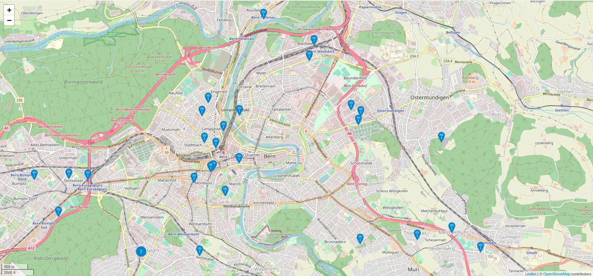

LoRaWAN and Koalasense
Gaétan Collaud / 18 August 2020
LoRaWAN
Long Range Wide Area Network
LoRaWAN
- Long range
- Very low power
- Low frequency (EU 433Mhz and 868Mhz)
- Max payload of 11 to 222 bytes
- 6 upstream messages per hour (depends)
- Designed for the Internet Of Things
LoRaWAN distance record
- 832km
- 25mW
- 868Mhz
- Line of sight
LoRaWAN for Maker
- The Things Network (TTN)
- gateway maintained by people/school/organization/...
- Free to use
- Very low coverage (except in big city)
TTN in Switzerland
TTN in Bern
LoRaWAN in Switzerland
- Swisscom has the lead
- 96.7% of population covered (not land !)
- pay to be partner
- pay per devices (2chf/month)
Swisscom coverage
Koalasense
2 engineers in electronics

|

|
2 software engineers

|

|
Koalasense
- Develop own devices
- Develop own cloud platform
- Use mainly Swisscom as carrier
- Use MessageBird for SMS and Voice call
One Koala

One shielded Koala
Koalasense
- Started with wineyard
- Continued with farmer
- Side projects like the Ski World cup of Crans-Montana
- Currently investigating soil moisture projects and watering